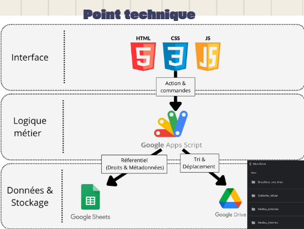

Amasco Internship: Media Flow & GDPR
 HTML/CSS
Google Apps Script
HTML/CSS
Google Apps Script
Development of a web application and a Google Apps Script backend: moderation dashboard and automatic image rights assignment algorithm.
> Analysis & BUT skills
Skills: Develop applications, Manage information data, Lead a project.
This project confronted me with real legal compliance issues. Translating GDPR rules into code taught me to think of a project first in terms of business needs and security, before technology.
 Git
Git